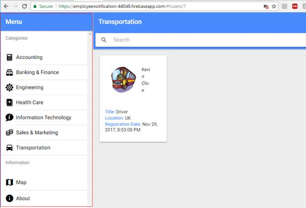
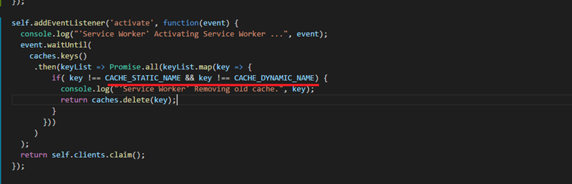
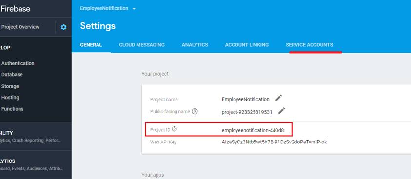
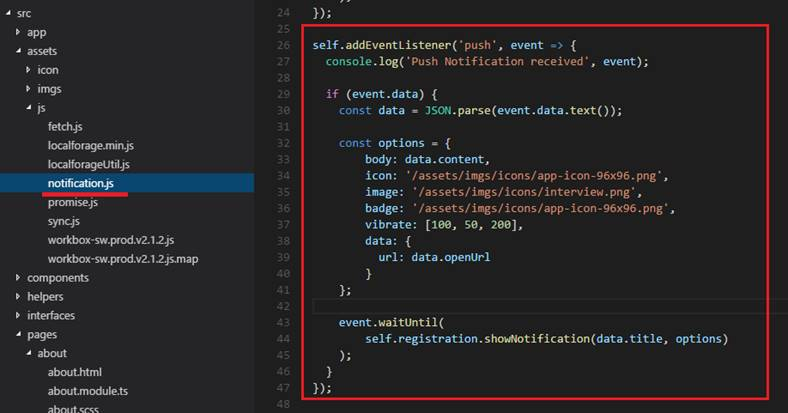

Employee Notification Application Description
Demo link: http://goo.gl/ryagGK or https://employeenotification-440d8.firebaseapp.com
Git Repo: https://github.com/Ashot72/employee-notification-PWA
How to run the application: https://ashot72.github.io/employee-notification-PWA/index.html
Please read "How to run the
application" first.
This application is developed on Ionic3
(Angular 4) platform. It users the latest features of ionic; deep linking, lazy
loading, desktop support etc.
Ionic was originally built with mobile
applications in mind. Now, it became great solution for progressive web and
desktop applications.
First component is "split pane"
which makes easy to create a multi-view layout.
Figure 1
This is the split pane view on mobile.

Figure 2
Split pane view on desktop.
Second one is all-new responsive grid
system that makes it easy to build UI that scales up from mobile through table
and desktop displays.
Figure 3
Grid view on mobile.
Figure 4
Grid view on desktop.
Ionic does not reply on URL routing
for navigation and by default the URL for an Ionic application never changes
when navigating the application.
If you want to link something in the
application you would force to start on the applications first page.
Deep linking allows you to link to
specific content in the application via the URL. It is done via @IonicPage
decorator.
Figure 5
When you reload the page, it will not
go to staring page. It will just reload the current one.
With Ionic lazy loading we are taking
one segment of code, chunk and loading it on demand as the app requests it.
Ionic allows to preload modules based
on priority if preloading is turn on. The following vales are possible for
priority: "high", "low" and "off",
In our application we preload all
modules by giving them priority in @IonicPage decorator.
Figure 6
Our application "build chunks"
loaded based on preloading priority.
You should consider and implement the
following points if you really want to have full featured PWA.
1) Web App Manifest
2) Service Workers
3) Background synching
4) Push notifications
The Web app manifest provides
information about an application (such as name, author, icon, and description)
in a JSON text file.
The purpose of the manifest it to
install web applications to the home screen of a device, providing users with
quicker access and a richer experience.
Figure 7
This is Employee Notification web app
manifest file.
Service Workers are the core of PWA
techniques for resource-caching and push notifications. It is a huge topic. You
definitely have to spend some time to learn it.
Resource-caching the most important
thing of PWA. Let's go through caching strategies first then look at the
Employee Notification app implementation.
Web applications used to be entirely
dependent on the server. All data, content, design and application logic were
sored on the server.
The client just renders some HTML to
the screen. This means that we should think about Offline-First case. With
Offline-fist, offline and low connectivity conditions
should not be treated as a
catastrophic failure, but just another possible state of Web apps. That is why
we should learn about common caching strategies.
Common Strategies
Cache Only
Figure 8
Respond to all requests for a resource
with a response from the cache. If it is not found in the cache, the request
will fail. The patter assumes that the
resource has been cached before, most
likely as a dependency during the service worker's installation. This is useful
for static resources that do not change
between releases, such as logos,
icons, stylesheets. This does not mean you can never change them. It simply
means they do not change within
the lifetime of a single version of
your app.
Cache, falling back to network
Figure 9
Similar to cache only, this pattern
will respond to requests with content from the cache. If, however, the content
is not found in the cache,
the service worker will attempt to
fetch it from the network and return that.
Cache, falling back to network with frequent
updates
Figure 10
For resources that do change from time
to time, but where showing latest version is less important that returning a
fast response, we can
modify the cache, falling back to
network pattern to always fetch the requested resources from the network even
when it is found in the cache.
The pattern delivers a fast response
from the cache, while fetching a more-up-to-date version and caching it in the
background. Any changes to the
resource fetched from the network will
be available the next time the user requests this resource.
Network Only
Figure 11
The classic model of the web. Try to
fetch the request from the network. If it fails, the request fails.
Network, falling back to cache
Figure 12
Always fetch the request from the
network. If the request fails, return the version from the cache. If it is not found
in the cache, the request will fail.
Network, falling back to cache with frequent
updates
Figure 13
When it is important to always server
the latest version of resource available, we cam use this pattern. Like the
original
pattern, this one always attempts to
fetch the latest version from the network, falling back to the cached version
only if the network fails.
In addition, every time the network is
accessed successfully, it updates the cache with the network response.
Cache, then network
Display data from the cache
immediately while checking the network for a more up-to-date version. As soon
as a response is returned from
the network, check if it is never than
the cache and update the page with the fresh content. You have to modify your
app to make two requests,
display cache content, and finally
update the page with never content when it becomes available.
Figure 14
Cache, then network sample code.
Generic fallback
Figure 15
When the content the user asked for
could not found in the cache, and network is not available, this pattern
returns an alternative 'default fallback'
from the cache instead of returning an
error.
I cannot cover all Service Worker
functionality. I will show which strategies I used in our application.
First, I will show how to do it using
fetch, then I will create another service worker using Workbox https://developers.google.com/web/tools/workbox/
Figure 16
It is easy to test and debug service
workers using chrome browser's Service Workers. You can test your app while you
are offline,
install new service worker, update,
unregister etc.
Figure 17
We define static assets to precache.
Figure 18
Precaching static files adding them to
CACHE_STATIC_NAME cache.

Figure 19
We should also remove old cache either
static or dynamic.

Figure 20
If request is coming from users.json
we put it into IndexedDB (will look into it later). We use network falling back to cache with frequent updates strategies.
Figure 21
The same strategy for an applicant (applicant's
details page).
Figure 22
For build chunks (Figure 6) cache falling back to network with frequent updates strategy is used.
Figure 23
For static assets cache only, strategy is used. For other cases cache falling back to network strategy is used.
Cache only
strategy here is kind of redundant but I show it for demo purposes. Caching is
mostly useful for static assets.
You can cache JSON data without a
problem. But for dynamic data IndexedDB is better option. Almost all browsers
support it.
IndexedDB is a low-level API for
client-side storage of significant amounts of structured data, including
files/blobs. It asynchronous and supports transactions.
It is really not fun to work with
IndexedDB directly. For that reason, we will use localForage instead.
https://localforage.github.io/localForage/#data-api-getitem
It is super easy to work with it.
LocalForage is a JavaScript library that improves the offline experience of your
app by using an asynchronous
data store with a simple,
localStorage-like API. localForage includes a localStorage-backed fallback
store for browsers with no indexedDB or WebSQL support.
Figure 24
We create two localForage instances.
Figure 25
EmployeeNotification instance keeps applicants'
data. 'SyncUsers' instance keeps the applicants' data needs to be synchronized.
Figure 26
Our app's static and dynamic caching
in Chrome dev tool.
Workbox is a collection of libraries
and build tools that make it easy to store your website's files locally, on
your users' devices.
I am going to implement caching using
Workbox. I use workbox-cli which is a CLI tool to generate a service and a
file manifest making use of the
workbox-sw module.
Figure 27
This is our app's workbox-cli-config
file where we define entries to be pre-cached and ignored and other properties.
Figure 28
package.json script section defines
"generate-sw": "workbox inject:manifest" command. Running
it, service-worker.js file is generated based on service-worker-base.js.
If you decide to change something in
service-worker.js file then you have to run generate-sw command to generate new
service-worker.js file.
Figure 29
workboxSW.precache([]) - precached entries
section is generated based on workbox-cli-config.js. Other sections, dynamic ones
will be programmed by us using workbox
routing.
Figure 30
Route matching build chunks makes use
of staleWhileRevaliate strategy. Resources are requested from both the cache
and the network in parallel,
then responds with the cached version.
The cache is replaced with whatever returns from the network. The cache name is
"builds".
One important property is
networkTimoutSeconds one which is 3 seconds. If we do not define the property
and
network is very slow then it will take
longer to get the response. After 3 seconds the response will be returned from
the cache.
Unfortunately fetch does not support timeout
property natively now.
Figure 31
We match all applicants and an
applicant route. Workbox does not work with IndexedDB directly so we just put
almost the same code what
we defined in fetch implementation of
service worker (Figures 20, 21).
Figure 32
For the rest we use cahceFirst
strategy. First, we define cachExpiration -> maxProperty for user-images
cache.
CacheExpiration is used to remove
entries form a cache based on criteria. 'maxEntries' is the maximum number of
entries to cache.
Entries will be expired using a latest
recently used policy once the cache reaches the threshold. 'maxAgeSeconds' is
the maximum
age of entry before it's treated as
staled and removed. There an issue with maxAgeSeconds I experienced which is
not documented.
Say we defined maxAgeEntry 5 minutes.
You went offline and the items were delivered form the cache. Everything works
fine until 5 minutes passed.
After 5 minutes the cache is removed
based on maxAgeEntry. The application is crashed as files have gone.
maxAgeEntry does not take into
consideration that the app is offline.
Figure 33
Precached assets in Cache Storage
chrome dev tool.
Figure 34
user-mages dynamic caching.
Figure 35
If you navigate to a category that has
not been navigated before you will see that applicants' pictures will be added
to "user-images" cache dynamically.
Figure 36
google-map cached assets.
Figure 37
"builds" build chunks
cached.
Figure 38
"assets" cached.
I have an issue with workbox caching.
To tell the truth I do not know if it is an issue or the right behavior.
Figure 39
When you run the application for the
first time only static cache is generated. Dynamic cache is only generated on
second page refresh.
This is annoying. if you go to offline
right after running the application for the first time then the app will not
work as
expected as dynamically cached assets
will not be there.
We hosted the application on Firebase
using Cloud Functions for Firebase. We could have our node/express server
installed but
it is easier to user Firebase instead
of ours. Cloud functions for Firebase lets you automatically run backend code
in response to events triggered
by Firebase features and HTTPS
requests. Your code is stored in Google's cloud and runs in a managed
environment.
https://firebase.google.com/docs/functions/get-started link explain how to write and deploy
functions. Definitely check video tutorial in that link.
Figure 40
You will see "functions"
folder generated and some firebase files after the successful installation.

Figure 41
This is Employee Notification firebase
functions page and the endpoint is https://us-central1-employeenotification-440d8.cloudfunctions.net/employeeNotification
Figure 42
We fetch that endpoint with an
applicant 's form values.
Figure 43
Request is passed to Firebase
onRequest handler.
Figure 44
We obtain form data and uploaded
picture using famous Busboy npm package.
In order to install applicants'
information into database we have to initialize the app store to access the Firebase
database.
Figure 45
To initialize the app, we need two
things. We need tell where our database lives and key file.
Figure 46
It is simple to get the database
location.
Figure 47
In order to retrieve key file, you should
click settings gear then go to Project settings page.

Figure 48
You see Project ID that is also used
in application (Figure 45). Click "SERVICE ACCOUNTS" link.
Figure 49
Click GENERATE NEW PRIVATE KEY button.
Figure 50
Generate a key and download it. It is a
JSON file.
Figure 51
I renamed the file I downloaded to "employeenotification.json"
and point to the right location for serviceAccount.
Note, this file will be git ignored and
will not be in the source code.
Figure 52
We got the access and can insert applicants'
data.
To send secure push messages from
client to server we use VAPID https://blog.mozilla.org/services/2016/04/04/using-vapid-with-webpush/
VAPID uses two keys private and
public. We use public key in our JavaScript code on the client and private keys
on the server. This way we protect
our server and make sure that we only
send messages from our application server.
Figure 53
We installed web-push package and run "npm
run web-push generate-vapid-keys" command. Both public and private keys
generated.
Figure 54
Vapid public key used in client code
to add subscriptions to database.
Figure 55
Subscription added to database. "endpoint"
is one of Google's server that we can send push messages.
Figure 56
On Firebase side we define both vapid
public and private keys.
Figure 57
Once the applicant is added to
database we set vapid details to push. Then iterate over subscriptions and send
notifications.
sub.val() is the subscription object;
endpoint, keys (auth, p256dh) Figure 55.

Figure 58
On the client side we listen to push,
receive data and show notification.
Figure 59
When notification is clicked we consider
two options. We navigate to applicant's details page if the app window is open
or open the application and navigate
to the applicant's details page.
It is time to save applicant's picture
on the server. First, we install @google-cloud/storage npm package.
Figure 60
We define google cloud config which is
gcconfig with takes two properties the projectId (Figure 48) and
keyFileName which is
eployeenotification.json we already added to our project.
We also define gcs by passing the
gcconfig. gcs which initializes google cloud storage to access.
Figure 61
formData callback returns uploaded
file (Figure 44). We need to obtain the bucket name to upload files.
Figure 62
Bucket name can be found under the
Storage. You could also see our applicants' pictures already uploaded there.
Figure 63
By knowing how Firebase creates links
we can do it ourselves to generate picture link.
Figure 64
Unloaded applicant's picture link.
Figure 65
Applicant's fields in database.
There is one thing that should take
into consideration regarding subscriptions. Users may subscribe and unsubscribe
multiple times or uninstall the
application and install again. This means that that all existing subscriptions
are useless because they
install completely new service worker.
We somehow should remove useless subscriptions.
Figure 65
I tried to figure out how to do it by
looking into the functions logs file. It seems that case we just get an
exception with 'NotRegistered' word in body.
Figure 66
If we find 'NotRegistered' in the
error we remove the subscription.
Figure 67
Another function is
removePreviousUsers function. We remove previous users from database and bucket
if they are more than 1000.